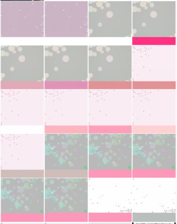

| Kindle本を出すにあたり大事なこと50 (大隈文庫) | |
| 中野 有紀子 | |
| (2017) | |
Kindle本を出すにあたり大事なこと５０
目次
１．KDP（Kindle Direct Publishing）のKindle本のメリットを考える（重さ・コンテンツ）
２．KDPのKindle本のメリットを考える（内容の更新の容易さ）
９．何文字くらいになるか、1日どれくらい書けばいいのか、目安を考えてみよう
１５．ワードで自分が書きやすいフォントに設定する、文字サイズを１２にする／改ページをマスターする
２３．ワードの文字カウント機能や校正機能を活用しよう／校正などを手伝ってもらえる人を探そう
２８．クラウドサービスを使って、スマホや携帯端末からも確認してみよう
３１．ワードでタイトルや、目次、章・項のフォントを調整しよう／改ページをマスターしよう
始めに
こんにちは、女性の在りたい姿を応援するエバーガールの中野 有紀子です。
数あるKindle本出版関連書籍の中から、この本を選んでいただき、ありがとうございます。
あなたは、なぜKindleで出版を考えていらっしゃるのですか？
副収入になったらいいな
今までの人生の振り返りになったらいいな
自分の持つノウハウを公開して、集客ツールになったらいいな
自分の文章が、世の中でたくさんの人々に読んでもらえたら嬉しいな
この中のどれか、あるいは絡み合った様々な理由があるでしょうか。
いざ挑戦しよう、と決意したものの、何でも初めてのことは不安ですよね。
Kindle出版は、最初は難しく感じますが、5冊目を書いている今は、難しく感じません。
まるでブログを書くかのように、楽しんで執筆をしています。
この2017年の9月から10月にかけて、私は「4本のKindle本を書くぞ」と決意し、実際に4冊のKindle本を出版しました。その後、2018年2月までにもう2冊出版しました。
最初に書こうと思った理由は、これまでブログや講座などで発信してきた頭の中を、それぞれテーマごとにまとめて、必要な人に読んでほしかったからです。ブログはこれまで2,300記事程書いてきましたが、同じテーマごとにさかのぼり、カタチにするのは難しいです。
自分の経験を本にまとめて、これまでの影響の範囲以上に多くの方に読んで頂き、世の中の何かお役に立てれば、と思ったのです。
4冊分の文字数の合計は、約135,000字でした。
その内訳は、
1冊目「ブログセラピー ～これからブログを始めたいと思っているあなたに～」 27,998文字
2冊目「メルカリでお片づけ ～のこす・うる・送り出す～」 42,912文字
3冊目「ネイリストへの道（一）～大卒の私がネイリストを志すまで編～」 16,508文字
4冊目「ネイリストへの道（二）～資格取得から開業まで編～」 48,052文字
です。
振り返ってみると、これらの文字数は一般的なKindle本に対するニーズより、ちょっと量が多かったようです。
Kindle本の役割としては、まだまだ「気軽に読んで、役に立った、なるほど！（ひざポン！）」というものが求められているような気がします。例えば、司馬遼太郎氏の「龍馬がゆく」が全8巻であるように、人気コミックが何冊も分かれているように、人に読んでもらうには適正な量があるようです。
Kindle paper whiteや、iPadなどの携帯端末、スマホから読むことが多い、Kindle本の場合、理想としては、1万字～2万字くらいが読みやすいようです。
そして値段設定は、1万字当たり100円、2万字なら200円、という感じが良いようです。
内容が長すぎて図表などがないと、よほどの文章力と中身がない限り、読者が途中で読書を脱落してしまう可能性があります。4万字台の本は、校正作業もとても大変でした。
最初は短めの本から挑戦された方が良さそうです。
この4冊のK
indle本を出したという経験と、自分が他の方のKindle本を読んだり、売れたり、いただいたレビューの手ごたえにより気づいたことを、記憶がホットなうちに書き留めたいと思います。
本書では、皆さんに飽きずに、最後まで読んで頂くことと、実際にKindle本の出版ができるイメージをもっていただけるように、50項目でまとめてみました。
全て項目ごとに目次に設定したので、いざ、Kindle本を書こうと思って挫折したときには、パラパラとめくって必要な個所を読み返し、スランプ脱出のヒントにしてくださいね。
読みやすいように、あえて参考画像は少なくしています。もしもっと画像をご覧になりたい方がいらっしゃったら、私のブログをご訪問ください。
KDPやKindle本制作中の画面や小ネタを色々公開しています。
女性の在りたい姿を応援する、エバーガールのブログ
本書を読み終えた後に、少しでも「できそう！やってみようかな」という風に思ってもらえるよう、皆さんの背中を押せたら嬉しいです。
本書は、約26,000字で書きました。
では、最初は気軽に「へ～そうなんだ！」と、ザーッと一気にお読みください。
Ⅰ． 何を書くか、という話
まずは、皆さんが今頭の中に浮かんでいる「ネタ」について、kindle本にできるかどうか、考えてみましょう。
ネタはいくつ思い浮かびますか？
いくつもある方は、その中で、優先順位をつけてみましょう。
そして、書きやすいものから1つずつ書いていくようにしましょう。
「最初に書いてみたいもの」から順番に、以下の作業をしてみてくださいね。
私の場合は、書きたいものが3つありました。
それぞれ優先順位をつけました。
まずは「ブログセラピー」からです。自分がブログに長年興味と関心があり、ブログ塾も主宰していて書きやすく、構成のアイデアがまとまったので、最初に書くことにしました。
「ブログセラピー」を書き終えたことで要領をつかめたので、少し休み、次の大作である「メルカリでお片づけ」に着手しました。3作目の「ネイリストへの道」は、書きたい内容が多くなったため、2巻に分けました。自分のこれまでのキャリアに関わることだったので、1番の長さになりました。
１．KDP（Kindle Direct Publishing）のKindle本のメリットを考える（重さ・コンテンツ）
あなたがKindle本を読むときに求めるものは何ですか？
暇つぶし？
それとも、知識を身につけたいから？
インターネット上で検索をすると、無料で閲覧できるまとめサイトがたくさんありますね。
Kindle本の良さには、まとめサイトなどと違うメリットがあります。
・いくつものページを見たり、どのサイトに信ぴょう性があるかを比較する時間を短縮したりしながら、知見を得ることができる
・1冊にある程度まとまっている、系統だった知識を得ることが出来る
・Amazonレビューやランキングシステムなどで作品に対する評価が担保される
・キンドル・アンリミテッドの読み放題のシステムに入っていれば、料金を気にせず、情報をたくさん手に入れることができる
一般的に、紙の本自体も重いし、内容も重いです。
なぜなら、出版社が総力を挙げて、売れるための内容や、宣伝や、装丁をしているからです。
今現在、紙の新刊は平均して10万字以上、1,000円以上するものが多いです。
その点、KDPのKindle本に求められるものは、量、質ともにライトなものが多いでしょう。
２．KDPのKindle本のメリットを考える（内容の更新の容易さ）
ハウツー本を書いて仕様の変更があったときや、誤植があったときなどは、紙の本なら改訂版を出すのが大変です。それに比べて、Kindle本の場合は、KDPに新しいデータを提出して承認を待つだけで大丈夫です。紙で自費出版をするよりも、容易に出版することが出来ます。
更新時に、表紙や内容紹介文も書き変えることが出来ます。そのため、更新した旨も書き添えることが出来ます。
これで、後から仕様が変わったらどうしようー！という心配は無用です。本の中に、「この本の内容は、〇年〇月時点での仕様です」と断りを入れておけば、なお安心でしょう。
続いて、「実は何を書くか、漠然としていたから、もう一回ちゃんと考えないといけないんだよね」という方向けのステップです。
３．これはダメだろう？というものは？
Kindle本の出版に際しては、読者の方に有益であれば、何を書いても大丈夫です。
ただし、Kindle paper whiteという白黒表示の端末で読む方も多いですし、スマホであれば画面が小さいことなどから、塗り絵や雑誌、画像ばかりが多いもの、などはあまり向いていません。
写真集やマンガを出されている方もいらっしゃいますが、一目で見てそうと分かるものにする工夫がいりますね。また、カラーであってもタブレットで見ることを配慮して、大きく分かりやすい構成にしてあげてください。
４．タイトルを決める
タイトルを決めます。最初は、仮称でもよいでしょう。その場合、（仮）タイトル と入れておいて、最後に考え直してもよいでしょう。
文章が書きあがってから、客観的な意見をもらうという手もありますね。
ポイントは、
・Kindleやwebで検索されやすい言葉であること
・他の本と明確に異なること（同じ本がないか確認すること）
・内容が分かりやすいこと
５．サブタイトルを決める
サブタイトルを決めます。KDPの申請画面では、本タイトルのほかにサブタイトルを入力する画面があります。このサブタイトルは、商品情報でも、本タイトルと同じサイズで表示されるため、重要です。本タイトルを補足できるように、十分工夫してみてください。本書はあえてサブタイトルを入れない方式を取っています。
６．プロット（骨子）を作る
書きたい本のプロット（骨子）を作ります。
例）
始めに なぜこの本を書いたのか、どういう人に読んでもらいたいのか
序章 業界の背景
一章 伝えたいこと１（起）
二章 伝えたいこと２（承）
三章 伝えたいこと３（転）
四章 伝えたいこと４（転）
五章 伝えたいこと５（結）
終りに まとめ
参考文献・奥付
などという流れが良いでしょう。各章の中に、項を作って小分けにしてもいいですし、1万字程度の本であれば、章だけで充分です。各章、各項目を2,000字～4,000字位にすると読み切りやすいようです。プロットを作ったときに、各文字数の配分も考えておけると、目安になって書き終りまでの進捗確認がしやすくなります。
※このプロットの段階や、書き始めのときは「テキストエディタ」を使っても良いでしょう。
「ワード」に慣れていない人はそもそも「ワード」を使うこと自体にストレスを感じるかもしれません。私もそうでした。
慣れるまでは、プロットと本文8,000字位はテキストで作成していました。ある程度の文字数が溜まってから、ワードにコピー＆ペーストをして、移行しました。
７．ターゲットを決めよう
現時点でのKindle本のコアな読者は、30代～50代の男性が多いです。
ですから、ハウツー本や、その世代の方が気になるトピックスの話の本が売れやすいと思います。
例えば、女性向けの本だとしても、入り口は男性も入りやすいようにタイトルなどを工夫した方が、結果的に閲覧数が増える傾向にあります。
女性向けの場合は、比較的若い世代の方向けが良さそうです。
ターゲットを決めることで、文体や、表紙などのイメージも変わっていきます。
私のこの本のターゲットは、
・Kindle本の出版に興味がある人（一般書ではなく実用書、ニッチですね）
・20代～50代 男女両方（ニッチなので、両方とも取り込みたいです）
・書きたいことがある人
・Kindleでの読書に多少慣れている人
です。
皆さんは当てはまりますか？
８．出版予定日を決めよう
Kindle本を書くこと自体が趣味だったら、毎日、何年も続けて良いでしょう。
しかし、時間は有限で、私たちがやらなければならないことはたくさんありますね。
「この日までに」という出版予定日が決まっていない、あいまいな目標設定だと計画もうまくいきにくいです。
・あの旅行の前までに
・あの連休の前までに
・夏休みの間中に
など、目標を立てることで、自分で自分のお尻を叩く編集者に見立てることが出来ます。
また、近い人にその目標を公言して、応援してもらうのもいいですよね。
「〇日までに出版したいから、そこまで集中するから理解してね」
「〇日までの3週間で執筆するので、息抜きに付き合ってほしい」
などは私も使った事例です。
また、執筆期間を半年とか1年とか設けてしまうと、「結局この本を通じて何が書きたかったんだっけ」と忘れてしまい、どこまで書いたのか分からなくなります。自分自身の興味関心、エネルギーも他のものに向けられるかもしれません。
ですから、私としては、「Kindle本を出したいと思ったら、いつまでに出したいかを決める」という目標を立てることをお勧めします。
９．何文字くらいになるか、1日どれくらい書けばいいのか、目安を考えてみよう
もし約2万字の本を2週間で書きたいのであれば、
2週間の目標÷週に5日の執筆＝1日 約2,000字の執筆、
見直し、表紙、などで残り4日 という風に割り振ることが出来ますね。具体的にどれくらい進めればいいのかがわかり、ペースメーカーになるでしょう。
もちろん、筆が進む日はもっと書いても構いません。あくまでも目安ということで。
普段文章を書き慣れていない人なら、この量が「1日500文字」などになりますね。その場合、自分の執筆可能量から算出すると、15,000字÷500字=30日となります。
このケースでは、見直しや校正、表紙を作る、などを含めると、最低でも1ヶ月半はかかるなぁ、という風に見積もってください。
１０．テーマの決め方
Kindle本の出版に際しては、読者の方に有益であれば、どんな内容でも大丈夫です。
自分が得意なこと、好きなこと、人に興味を持ってもらえることなどについて書いてみましょう。
テーマが広がり過ぎると、長くなってまとめ上げるのが大変ですので、最初の本は短めのものからトライしてみましょう。
できれば、事前にブログやSNSなどでどれくらいの人が書こうとしているテーマに関心があるのか、軽い文章から反応を探ってみてもいいかもしれないですね。
ブログやSNSなどで、反響を得ることが出来たら、「よし、じゃあ、本にしてみよう」という手ごたえに繋がります。
Kindle本の面白いところは、マイナーであるために大手出版社がなかなか本にできず、高額になってしまいがちな本も気軽に出版出来ることです。その本がなかなか手に入らない情報を書いてあって、アマゾンの検索でその分野で上位に出てくれば、おそらく購入されるでしょう。
逆に、人気がある分野ですと、自分が書いた内容に自信があっても、どれも似たり寄ったりなように思われて、せっかく出版した本が埋もれる可能性があります。
あなたの持っているマニアックな知識こそが、もしかしたら売れるかもしれませんね？
Ⅱ．システム的な話
続いて、Kindle本を書きたいと思うあなたのハードルになっているであろう、ややこしい仕組みについて解説しますね。これを理解しておけば、まず、「執筆するぞ！」という準備が整います。
KDPに登録することで、「自分は本を出すんだ！」という気合いが入ります。それから、やり方や、表紙画像の指定サイズなどの最新情報を入手することが出来ます。web上や、Kindle出版ハウツー本には古い情報が入っていることも多いので、様々な情報を得たとしても、 最新の情報はKDPの公式サイトを参考にするようにしてください。
登録のときは、アマゾンがアメリカの会社であるため、「米国以外の出版社の源泉徴収税」という部分がやや分かりにくいです。
しかし、国際線の飛行機の中の書類のようなものです。ガイダンスを見ながら、インタビューに正直に答えていってクリアしてください。ペンネームで出版予定の人も、まずは本名で登録してください。（著者名は著作ごとに変えられます。KDPアカウントは1つです）
アカウントが発行されると、KDPのサイトを見ることが出来ます。
こちらには、随時正確なルールが載っています。迷ったときはこちらを確認してください。

プロフィール写真を実際に使うのは最後ですが、「この本を書いた人は誰？」と分かる顔やプロフィールがあった方が良いです。関連書籍を出していく場合や、一冊目が気に入って他の本を探してもらう場合にも、著者ページを見てもらえる可能性があります。私たちはまだ無名の作家なので、自分から公表しないことには誰にも知ってもらえません。また、同姓同名の著者との区別化のためでもあります。
まずはこの2点くらいで大丈夫です。
Ⅲ．どうやってワードで書くか、という話
文章が中心の本を書く方は、ワードで書き進める方法をお勧めします。ですので、本用にファイルを一つ作りましょう。ワードですと、縦書きへの変更も可能です。
Kindle本は、縦書きでも、横書きでもどちらでも出版ができます。
（yahooブログやでんでんコンバーターなどの話を読んでも、私は理解できなかったので、マイクロソフト社のワードがオススメということで書き進めていきます。ブログから本にできる方法もあるようで、そちらはやや気になりますが。でんでんコンバーターは難しい印象を受けました。ワードが普通の人は一番馴染みがあり、理解できるようになると、実務にも使える技術となるのでお勧めです。）
１４．ワードの「余白設定」を「狭い」にする
KDP推奨のやり方です。Kindle本は、読む端末によって、またユーザー設定によって改行の位置などがそれぞれ異なります。狭い、にしておいて書いた方が無難なようです。
１５．ワードで自分が書きやすいフォントに設定する、文字サイズを１２にする／改ページをマスターする
フォントの指定は、Kindle本に変換されるときにすべて消えてしまいます。
いずれの端末で読書するにしても、読者自身が、明朝体やゴシック体を選び、文字のサイズを選べるようになっています。本で読んでいいな、と思ったやり方は、文字サイズを12にするということです。こうすると、大見出し、中見出しなどを14、16、20など2の倍数のフォントにすることで管理しやすくなります。
それから、改ページという機能をマスターしてください。
改ページしたい文章の末尾で、
「レイアウトタブ→区切り」
という選択をします。
するとその個所からページが切り替わります。
どの端末を使う読者も読みやすいように、章や、画像の切れ間などに適切に改ページを入れてください。Kindle本は、読者が文字の大きさ（フォントサイズ）を設定できるので、ワードで書いた文章がそのまま表示されることはまれです。36.でもお伝えしますが、改ページには気をつけてください。
１６．ワードの目次機能を理解しよう
ワードでの目次機能を使えるようにします。
まず目次にしたい文章を選択し、スタイルの設定をします。
ワードの上タブの、参考資料→テキストの追加→レベル１（大目次：章）、レベル２（中目次：項）という風に選択をし、「自動作成の目次」というところをクリックすると、目次ページが出来上がります。
この目次機能は、Kindle本になっても目次として反映します。
プロットを作ってから、ワードの機能を使って目次を作るとググっとKindle本っぽくなります。
執筆する際も、目次から書く対象にジャンプすることが出来るので、作業効率があがりますよ。
１７．章と項を入れて、目次の設定をしよう
最初にプロットを作ってしまうことで、執筆が進む、ということについてお話をしました。
今日は何章をやろう、今日は何項までやろう、などと、執筆の区切りが良くなります。
また、この設定をすることで、その中での起承転結も意識することが出来ます。
各項目で文章を組み立てておけば、後からコピー＆ペーストで全体の構成を組み替えることもできます。ダラダラと書き始めるより、オススメの方法です。
１８．言い切り方を目指そう
本を出すということは、著者になるということ。
自信がない内容でも、説得力を持つことが出来るように、しっかり言い切るように心がけましょう。
特に、ノウハウ本では、「～と思います」調ですと、説得力が足りなくなってしまいます。
１９．読者の立場に立って、過不足なく書こう
読者にとって分かりやすい言葉を使いましょう。
専門的で、分かりにくい言葉が出てきたときに、読者がググったり、頭の中で「？？」マークをつけないで済むようにしてあげる必要があります。
その場合、分かりやすい言葉に言い換えるか、注釈を入れましょう。
個人的な体験を書くときは、具体的な数値や描写を入れるように注意しましょう。
２０．必要な分だけ図表を入れよう
分かりやすくするために写真や図表を入れてあげると、文字だけよりも、理解が深まって良いでしょう。ただし、画像メインの本ではない場合は、多用は避けて本文の補足にとどめましょう。
理由１．
文と画像をいったりきたりになって、読者の負担になります。
理由２．
データ量が負荷をかける可能性があります。
あなたのKindle本を読む人は、他の本もKindleで読んでいる可能性があります。
音楽も、書籍も、オーディオブックも、自分で撮った写真も、とたくさんのデータを端末に入れている可能性があります。直ぐに削除されない良書を書くためには、必要以上の画像を入れないようにしましょう。
また、マンガや写真集のように画像ばかりが多い場合、Kindle本の印税から、データ通信量がひかれるということもあります。（私の場合、それぞれの著作のロイヤルティから、1円ずつひかれています。）
２１．必要な画像と図表を準備しよう
ワードの中に入れる写真や図表を準備します。
図表の場合はPNG形式にします。JPEGよりも解像度が高く、見やすいからです。
画像をPNG形式で保存する癖をつけてください。
KDPのサイトには、写真の場合は、 650 MB 以下の、 できるだけ 高解像度の画像 を 使用してください 、とあります。
準備ができて、挿入場所が決まったら、ワードの「挿入」タブから「画像」を選んで挿入します。
挿入後に、中央に寄せる配慮をしましょう。
図表の中の文字のサイズは、分かりやすいように16フォント以上にすると、読みやすくなります。
２２．テーマや構成について、客観的な意見をもらおう
自分が考えたアイデアや、作ったプロットを最初は何人かの方に見てもらいましょう。
「こういう内容の本を、こういう流れで書こうと思っているんだけれど、どう思う？意見があれば教えて」と事前に見てもらうと、書き上げる前に意見がもらえますので、読者目線での読みやすさを取り入れることが出来ます。
私は、それぞれの本につき２、３名の方にテーマや構成について、事前に意見をもらうことが出来ました。
「この本で一番伝えたいことは何かな？」
「ここの部分はいらないのでは？」
「結論やメインの部分は先に持ってきた方がいいのでは？」
「このタイトル、分かりやすくていいと思うな」
「表紙にこの文字は分かりにくいのでは？」
などです。自分1人で全てを考えると、どうしても独りよがりのものになりがちです。
家族や友人などに協力をお願いしてみましょう。
２３．ワードの文字カウント機能や校正機能を活用しよう／校正などを手伝ってもらえる人を探そう
私は、本書を含め、5冊の本を出すにあたり、7名の方に校正をしてもらいました。
これは、大変恵まれた例でした。1冊目の「ブログセラピー」を出したときに、後から読者の方にたくさん誤字を見つけて頂きました。それから、ダウンロード済みの読者の方に改訂版に差し替えてもらうのが大変だということに気づき（ブログなどでお知らせしましたが、一般読者の方には、直接お知らせする術もありませんから）やはり2重、3重と校正をお願いしよう、という気持ちになったのです。
ワードの機能でも、「校閲」というのを選択すると、様々な校正の機能がついていて、活用できます。私が良く使ったのは、自動のスペルチェック＆文字校正、読み上げ機能、表記ゆれチェックです。
Kindle本を読み上げてもらって耳で聞いて読む人も増えています。
同じような機能がワードにもあるのです。目で見て誤字などが漏れたとしても、耳で聞くとダブルチェックにもなります。
こちらは、表記ゆれ機能を使って校正した事例です。
このような機能を使っても見つけられず、校正していただいた方々に指摘してもらった、私の文章のクセは、
・漢数字と数字が混ざること（しかも半角と全角も）
・「 」内に句読点を入れてしまうこと
・「・・・・」を多用してしまうこと
・「いただいた」と、「頂いた」などが混じる
などでした。
自分の目だけだと、意識していないと気づくことが出来ないものです。
この、「できない」も、「出来ない」と使い混じってしまうことがあります。
そういう時は、表記ゆれで直すこともできますし、ナビゲーションの「文書の検索」で「出来」や「でき」で検索をすると、ワード機能に長文の中からその語句を見つけてもらえます。
この機能を使うことで、
「一級」と「1級」の表記ゆれなども直すことが出来ました。
最初から注意深く、ルールを使って書き進められればこのような問題は起きませんが、初心者さんは「まず書くこと」が大事だと思います。
あとから信頼できる方にチェックしてもらえるから、とりあえず書こう。
という安心感があると、違います。
無料で使える自動校正ツールもネット上にあるようですし、自分でも耳障りなどを確認するのは前提として、他の方からも校正をして頂けるように、できれば事前にお願いをしておきましょう。
その際、章ごとに見てもらうようにするのもオススメです。
一つの章を読むだけでも分かりやすくなっているか。
この観点も重要です。
２４．完璧主義を捨てよう
この本をお読みいただいている方は、「Kindle本の出版が初めて」でしょう。
頑張って原稿を書き終えたあと。
どんなに見直しても、誤字訂正、構成、文法の誤り、分かりやすさなど、心配事は尽きないでしょう。私もそうでした。
会話でのしゃべり言葉でならば、ある程度雰囲気で伝わったりもしますが、文字表現だけで伝えたいことを書くということは、思った以上に大変でした。
しかし、これも場数の問題です。
量を書くごとに、そして読んでもらううちに、上手になっていきます。
私たちはほとんど、プロの作家ではありませんし、Kindle本の執筆が本業でもないでしょう。
多少不安があっても、出版、というスタートを最初に切ってしまいしょう。
後から見直して気づいたときに、「やっぱりこうしよう」と変えたり、知り合いやAmazonレビューなどで誤字などについて指摘してもらったりすればいいのです。
間違いや分かりにくさはないに越したことはありませんが、何度も確認して、大丈夫そうであれば、GOしましょう。やってみてから分かることもたくさんあります。
Ⅳ．書き進めるコツ
続いて、実際に書き続けるために、「これがポイントだなー」と思ったことを説明します。
集中するための方法というのは、個人差があると思いますので、私の場合、というご参考までに。
２５．集中できる環境を作ろう
1日500字でも、2,000文字でも、「分かりやすく書く」という作業は集中力を要します。
通勤で30分電車に乗っている方ならば、その30分で1段落を書き進める、帰りにもう1段落。
この状態になったら書くんだ、というパターンを作るとよいでしょう。
私の場合、1度に書く量が2,000字～4,000字くらいでないと満足できなくなってきたので、それに対して2～4時間を見積もります。
そうすると、だいたい半日はかかるというような計算になります。
その間は、「たとえ荷物が来ても出られないという覚悟」をもって、呼び鈴が聞こえない部屋にいます。リビングにいると、「ああ、あそこに物が落ちているなぁ」とか、「そろそろ晩御飯の支度をしなくちゃ」とかいう邪念が入るのです。
集中する時間が1時間しか取れない時は、全体や、短い章ごとの見直しや、目次の設定などに充てたりします。少しずつでも、できるところから始めていきましょう。
私はもともと、週に1度くらい、ブログを書く時間を取っています。
同じように2～3時間余裕を見て、一気に2～5記事を書き上げます。
Kindle本のみならず、他の文章を書くにもお勧めのやり方です。
それから、パソコンをSNSなどに常時接続されている方は、お知らせ音を消したり、アプリを落としたりしておくことも大切です。スマホの電源を切るのも良いでしょう。
２６．家がダメならノマドやホテルも検討しよう
どうしても家だと集中できないことがあります。散らかっている部屋、やらなければならないことなどが見えてしまうのですね。そんなとき、私は長居できて、テーブルが広い喫茶店をよく利用しています。混みあっている時やランチタイムですと気がひけますので、空いている時間を狙うようにします。例えば、朝7時半にコメダ珈琲に行って、11時には帰る、というような感じです。コメダ珈琲はテーブルも広いですし、長居を前提としている（その分割高）ので、私の通っている店舗では、店員さんにせかされることがありません。
それでも、今日はどうしても2.5時間×3セット集中したい、というときなどはお店を変えたりします。こういうカフェなどで仕事をするスタイルを、「ノマドワーカー」といいます。
執筆のためにホテルにも行きました。これは、有名な作家の方々も行っている方法です。
三谷幸喜さんもそうされていたとか。
ホテルに行くと、日常生活から切り離されますので、集中して執筆をすることが出来ます。Wi-fiも接続しやすいです。
ちなみに、今は美容室でカラーリングの待ち時間に書いています。アームレストを貸し出してくれて、ありがたいです。
本書の表紙は、高速バスで移動する2時間で作りました。
〆切があると思うと、隙間時間も活用することが出来ます。
２７．ブログやSNSなどにネタを溜めておこう
本としての体裁を成すには、最初にプロットを作ったように大体5章で5項目、というように15～25トピックスが必要です。
本業でいつもプレゼンをしている、とか、元となるデータがある場合でない限り、いざ、本を書く時に全てを思い返すのはとても大変です。
ですから、日頃からブログやSNSなどで1つ1つのトピックスに対して、「小見出し」「本文」という風に発信を重ねておくのがお勧めです。
SNSではあまり長文は好まれませんが、ブログであれば長文を書き溜めることもできます。
タイトル付け、段落付けなどもKindle本に通じるものがあるでしょう。練習、下書きに最適です。
コメントを頂くことで、「ああ、みんなはこういうところがもっと知りたいんだな」などと参考になります。幸いにも反響が得られた記事に対しては、自信をもって本の内容にできるでしょう。
ブログをどう始めたら？何を書いたらいいのか分からない、という方は、ぜひ拙著、「ブログセラピー～これからブログを始めたいあなたへ～」をお読みください。
アフィリエイターの方などで、日頃から人に読まれることを意識した良質な記事を書かれている方は、ブログの記事をそのままKindle本にされたりしています。
ネタ探しにも、執筆力アップにも、ファンの開拓にも、本の告知のためにも、ブログ執筆は有効です。
２８．クラウドサービスを使って、スマホや携帯端末からも確認してみよう
原稿を書き進める作業はパソコンを中心に行う方が多いと思います。
合間合間で、大事な原稿データをクラウドサービスにバックアップを取りましょう。私は、グーグルドライブやドロップボックスを活用していました。どちらも無料で一定容量まで使うことができます。
こうしておくことのメリットは、
・いざパソコンに何かあったときにバックアップがとれている
・校正をお願いしている方などとのデータやり取りが容易
・スマホなどからもアクセスできるため、パソコン以外で読む読者の立場になってチェックできる（ほとんどの方がパソコン以外から読まれますから）
です。
私も、出かける前に最新版をアップロードしておき、移動中の電車の中などからそのレイアウトや文章をチェックしています。
この方法は、お勧めです。
２９．途中まででもいいので、人に見てもらおう
客観的な意見をもらうために、親しい人に読んでもらいましょう。その場合、すでに出来上がった力作になってしまうと、読んだ方も「批判するのは申し訳ないなぁ」と、意見が言いにくいです。
途中までの間に、何度か感想をもらいましょう。
・プロットができた段階で
・タイトルとターゲットが決まった段階で
・少し書き進めた段階で、文体や、文章から受ける印象について
などをフィードバックしてもらえたらありがたいですね。
「面白いじゃない」という良い意見をもらって、モチベーションをアップすることもできますし、反対に「こういうところが読みにくいかな」と言ってもらうことで、自分の文章の悪い癖などにも気づくことが出来ます。
私は、
・ひらがなの方が読みやすいところを漢字にしてしまうし、その使い方もバラバラで読者が混乱する
・優しい文章かと思ったら、たまに難しい言葉を使って読者を戸惑わせる
・一文が長い
などの悪い癖があります。
早めに指摘してもらうことで、後の文章に生かすことが出来るので、「やっぱり早めに見ておいてもらってよかったなー」と実感しています。
３０．音声入力という方法もある／腰痛や肩凝りにもご注意を
音声入力という方法もあります。
野口悠紀雄さんの「話すだけで書ける究極の文章法 人工知能が助けてくれる」という本がとても参考になります。野口さんは、朝にランニングをして頭をすっきりさせ、音声入力を中心に原稿を執筆されています。iPhoneの音声入力機能で小まめにアイデアメモを取るそうです。
ちょっとした隙間に手帳を開いたり、パソコンを開いたりするのは難しいかもしれませんが、iPhoneに向かって話しかけるだけなら簡単です。
私の場合、「始めに」や、「終わりに」の文章の構成や出だしが思いついたときに、音声メモを取って、自分のパソコンにメールで送ることが多いです。そのような文章は、話しかけるような文体なので、まさに音声入力にうってつけだと考えています。
本書のように、ロジカルに客観的な内容を書く場合には、私はまだトレーニングが甘いため、スムーズには言語化することが出来ません。ですので、考えながらタイプして打っています。
いつも講座を開いている内容を文章にする方などは、音声入力が向いているでしょう。
音声入力は、とてもスピーディな入力システムですが、最初のうちは誤字などが多くなりますので、注意深く見直しをしてください。
それから、どうしても集中すると腰痛や肩凝りなどの症状も出てきます。
私は、本書を合わせて15万字／50日を書いていますし、他にもブログなどを書いているので、1日あたり3,000字～10,000字書いています。すると、ついつい集中しすぎてエコノミークラス症候群で足先がしびれたり、肩凝りが生じたりします。
適度に休憩を取って歩く、肩上げ体操を行う、遠くを見るようにする、バランスボールチェアやスタンディングデスクを併用する、などの工夫を行うとよいでしょう。
筋力がついたからか今は悩まされませんが、腱鞘炎にもなりました。気をつけてくださいね！
作家の村上春樹さんは、著書 「夢を見るために毎朝僕は目覚めるのです 村上春樹インタビュー集1997-2011」によると、朝にはランニング、午前中執筆に集中し、午後はプール、夜21時には寝るといった生活をされているそうです。
「それはいいなあ」と、私もそのようにしたかったのですが、なかなか一つの姿勢で没頭してしまう性分なので、なかなかそうもいきません。ぜひ、皆さんは体のメンテナンスをしながら、執筆を楽しんでください。
Ⅴ．見直し、仕上げ
頑張って本文、あとがき、奥付などを書き終えたら、見直しと仕上げです。
見直しの方法は、
□ 全体の構成を見る（章や項目の差し替えを検討する）
□ タイトル、サブタイトルを見直す
□ 行間をチェックする
□ 誤字脱字をチェックする（拡大表示法・音声読み上げ法・他者Wチェック法）
□ フォントや行間に一貫性があるか、見直しやすいか
□ 改ページがうまくいっているか
□ 分かりやすさはどうか、重複表現はないか
などです。
３１．ワードでタイトルや、目次、章・項のフォントを調整しよう／改ページをマスターしよう
ここまで進んだらあと一息です。
目次となる、項目１．項目２．について、フォントを調整しましょう。
カラーで読む方のために、タイトルくらいは色を入れてもいいと思います。（ここは個人のお好みです）
この本ですと、
項目１．（章見出し）は、18フォント＋太字にしています。項目２．（項見出し）を14フォント＋太字、本文を12フォントで書いています。
各タイトルの下には、20フォント分×2のスペースを空けています。
章の始めや、長めの項のあとには改ページを入れています。
少し見やすくありませんか？
こういった匙加減も、出してみて、自分でちょうどよいバランスを探していくとよいでしょう。この本も、出版してから告知する前に、再度バランスを見直して整えています。
３２．表紙を作ろう
続いて表紙を作ります。
私は、見た目も大事に考えているので、半分くらい書き終えたときくらいから表紙の構想を練っています。時には表紙の作成を間に挟んでリフレッシュすることもあります。
提出形式は、
・ JPEG (JPEG/JPG)
・ TIFF (TIF/TIFF)
のいずれかです。
Kindle本の表紙サイズは、およそ1：1.6です。
KDPの規定によると、
「画像の幅 1,000 ピクセルあたり 1,600 ピクセルの高さが必要です。特に高解像度の端末で画像の品質を最高にするには、画像の高さを 2,500 ピクセル以上にします。表紙ファイルの理想的な寸法は 2,560 x 1,600 ピクセルです。」 とあります。
また、 「表紙画像の背景を白やごく薄い色にすると、白い背景との区別がつかなくなる場合があります。表紙の境界を明確にするために、3 ～ 4 ピクセルの細い薄灰色の枠線を追加することをお勧めします」 とあるので、アプリの有料オプションのフレームを使い、外枠を少し白くしています。
この表紙は普段愛用しているスマホのアプリ、「Phonto」というものだけで作り上げました。
拙著、「ブログセラピー」、「メルカリでお片づけ」の表紙も同じです。文字入れや画像加工がとてもしやすいのです。
表紙に関しても、webや、Kindle本出版に関するノウハウ本をいくつも見ました。だいたいは、
１．パソコンに標準のペイントなどを使う方法
２．パワーポイントを使う方法
３．イラストレーター、フォトショップなどを使う方法
４．クラウドサービスなどに外注して、フリーランスのデザイナーさんに作ってもらう方法
５．サイズとイメージを伝えて知人に作ってもらう方法
などがあります。
しかし、１～３のやり方では私は上手にできませんでした。普段使い慣れている画像加工アプリが使いやすかったのです。
人によって普段使う画像加工の方法や、センスなどはまちまちです。
基本的には、
・フリーイラストか、自分が撮った好きな写真を準備する
・タイトルや著者名を見やすく入れる
ということができれば、表紙のできあがりです。
表紙は大事ですが、表紙ばかりが良くて、中身が薄いとAmazonレビューなどで酷評されますので、ご注意を！この本も、いい表紙ができたので、良いものにしようと頑張っています。
表紙制作には、執筆のモチベーションを上げる効果もあります。
【表紙のポイント】
□ タイトルが表紙に記載されている（当たり前ですが、KDPの要件です）
□ 文字がくっきりと見やすい
□ 好印象な色の組み合わせ
□ 帯の内容はそんなに見られていない（帯の内容より、33．「この本の内容説明」の方をよく見ています）ので雰囲気重視
□ ターゲットに響く色合いとデザイン（私は、男性にも読んで欲しいため、本書では「50」をブルーにしました）
□ 色を使いすぎない
などです。これも最初から完璧なものはできないと思いますから、ある程度気に入ったらGOしてみましょう！
出版した後から差し替えることもできます。
「Phonto」のアプリを使う場合のやり方
プレーンな画像を使用する → サイズ指定 カスタム
を選択、指定したサイズの画像を作成（1,600×2,560）

背景の画像は、「時玉」という可愛らしいアプリで作る画像を使っています。
事前に、Kindle本の表紙への使用許可をアプリの管理者の方からいただいています。
そこに、「Phonto」の「画像を追加する」という機能で色々な帯を入れてみて、イメージを固めていきました。
帯は、必ず必要なものではありません。今の流行りではあります。
帯をつけるときは、1：1.6の割合を意識されるとバランスが良いです。

本書の表紙をピンクにしたのは、ランキング上位になったときに目立つようにです。お蔭様で、「メルカリでお片づけ」は旬の「メルカリ」の内容を扱った自信作で、「起業・開業」分野で何度もランクインさせて頂いています。この上位本を見て頂くと分かるように、黄色や水色、黒字、赤字などは売れやすい傾向があるようです。
これまでの本では色々な表紙を試しました。やはり、青やグリーンなどの中性的な色はKindleユーザーに受け入れられやすかったようです。この本のピンクは、冒険です！
結果は出してみないと分かりません。
でも、Kindle出版は費用がかからず、出版も絶版も著者の自由というノーリスクですので、楽しんで冒険することが出来ますよ。表紙では是非、オリジナリティも考えてみてくださいね。
表紙を作るのは、大変だけれど、楽しい時間でもあります。
今回は、念には念を入れて、自分で考えた元の案を"Kindle paper white"用の白黒で見直してみたり、Facebookで友人の皆さんに投票形式で意見をもらったりしました。
その結果、この表紙がいいと言ってもらったので、きっと売れるといいな、と考えています。

Ⅵ．さあ、出版してみよう
表紙もできて、原稿もできました！
いよいよ出版です。一気に行ってしまいましょう。
私も実際に本書の申請を行いながら、この章を書き進めていきますね。
以下の項目は、原稿を含め、全て出版後も変更ができますので、ここも、完璧を目指さずに進めていきましょう。
３３．本の情報を入力し、説明文を考えよう
・KDPのマイページで、「本棚」→「新規出版」を選択します。
・本のタイトル、フリガナ、サブタイトルなどを入力します。
・レーベル名を入力します。レーベル名はあってもなくても構いません。
実在していてもしていなくても構いません。あなたが作って良いのです。
私は、「大隈文庫」で統一しています。「ゆきこブックス」や「エバーガール新書」などでも構いません。しっかりAmazonが表示をしてくれるので、つけたいものがあったらつけてみましょう。
続いて
・著者名を入力します。ペンネームを使用したい方は、ここにペンネームを入力します。
・共著の方がいる場合は名前を入力します。
※各項目、英字での入力を求められます。海外でも販売する方は、ローマ字ではなく、ぜひ英語でのタイトル付けにも挑戦されてください。
そして、いよいよ 内容紹介 です。
【内容紹介】
タイトルと表紙がビシッと決まったとしても、無名の皆さんの本を買ってくれる可能性があるのは、最初は知人やSNSのフォロワーさんくらいしかいないと思います。
少しでも、この項目で書いてある内容を詳しく説明し、一般の方から「この本を読むとよいことがありそう！」という風に感じてもらいましょう。ここで気に入ってもらうと、サンプル版をダウンロードしてもらえる可能性も高まります。（サンプル版で興味を引くために、最初の数ページの内容も大事です）そこから購買に至る可能性が高まります。
皆さんが本を選んで買ったり読んだりするときも、そういうステップを踏まれていますよね。
この「内容紹介」という項目は、なんと4,000字まで入力することが出来ます。
さすがに4,000字も読んでもらうのは大変だと思うのですが、どんなものかを知って頂くために詳しく内容を説明するようにしましょう。
私の工夫としては、目次をできるだけ入れるようにしています。（本書はあえて目次を多くしているので、全部は掲載していません。）色々な人気本を参考にされてください。
３４．カテゴリーについて考えよう
ここまで入力すると、キーワードと、カテゴリーを選択する項目に移ります。
【キーワード】
KDPの説明によると、
「検索キーワードは、読者が Amazon サイトを閲覧するときに本を見つけやすくするものです。本の概要や内容を示すキーワードや短い語句を入力できます。キーワードを指定するときは、その本をさまざまな切り口から探してもらえるようにするために、本のタイトル、カテゴリー、内容紹介と重複しない単語を選ぶことをお勧めします。特定のキーワードは使用禁止となっており、そのようなキーワードを指定すると、本の販売が停止される場合があります」
となっています。
最大7つまで選ぶことが出来るので、有効活用しましょう。
【カテゴリー】
こちらもKDPの説明の引用です。
「参照カテゴリーは、Amazon サイト内で読者に本を見つけてもらいやすくするための分類です。実際の書店で見られる棚の分類 (フィクション、歴史など) のようなものと考えてください。1 つの本に対して最大 2 つの参照カテゴリーを選択できます。読者が本を探すときには参照カテゴリーを参考にするので、本の内容に適した正確なカテゴリーを選択してください。」
このカテゴリーは、先ほど「32．表紙を作ろう」の項で書いた「カテゴリーごとランキング」への掲載に影響してきます。カテゴリーごとランキングを紹介してくれる人気ブログもありますし、カテゴリー別に人気本を探す読者の方もいることから、適切なものを選択しましょう。
似たようなものがあり、迷ったときは、ライバルが少なめのカテゴリーを選ぶとよいでしょう。
この本は、
ノンフィクション > 言語技術・教科 > 著述業
ノンフィクション > 言語技術・教科 > 出版
というカテゴリーを選びました。
それから、「この本は成人向けコンテンツですか？」と聞かれる項目があります。
私は以前、ここを「はい」としてしまいました！
すると、待ち遠しく出版された本がなんと「アダルト」本となり、アマゾンの検索画面で「この本はアダルト本です」となり表紙すら掲載してもらえない、という失敗をしてしまいました。
再度この点だけ内容を修正して、レビューを待つまで24時間以上かかりました。とほほ。
皆さんは、気をつけてくださいね。
ここまで入力出来たら、「本の発売準備ができました」を押して次の画面に進みます。
３５．データをアップロードしよう
次に、Kindle本のコンテンツ、というページに進みます。
ここで、実際のワードファイルと表紙画像をアップロードします。
３６．Kindleプレビューアーで画面の確認をしよう
原稿がアップロードされて、kindle用にデータ変換されるまでには数分かかります。無事にアップロードが終わったら、kindle本のプレビューという項目の「プレビューアーを起動」という選択をすると、実際の画面のようなデモページを見ることが出来ます。
このプレビューはとっても重要です。スマホ端末、タブレット、Kindle paper whiteなどで見やすいか、改ページは適切か、フォントサイズはちょうどよいか、などの確認をします。特に、写真とその解説の入ったページの送りなどは注意をしてください。
ここで、全てのページに目を通すことで、以下のような作業を行うことが重要です。
・最後の誤植チェック
・改ページチェック
・フォントチェック
ここで、直したいデータがあったら、ファイルを修正して、再度アップロードをしてください。
とても優れたツールです。
３７．KDPセレクトに加入する
プレビューアーでのチェックが終わったら、いよいよ【権利と価格】という項目になります。
まずはKDPセレクトに登録するか否かという項目があります。KDPセレクトというのは、日本の販売において70％の印税が受け取れるというシステムです。
Kindle以外でこの本を売ることが出来ない代わりに、高率の印税や、キャンペーンなどのメリットが受けられます。楽天KOBOや、自社サイトなどで積極的に売りたい方以外は、KDPセレクトに加入されることをお勧めします。
KDPセレクトの説明
"本を Kindle ストアの独占販売にすると (これは KDP セレクト登録期間中の必須要件です)、その本は Kindle Unlimited (KU) および Kindle オーナー ライブラリー (KOL) にも追加されます。出版者は、KU または KOL の利用者がその本を読んだページ数に基づいて、KDP セレクト グローバル基金の分配金を受け取ることができます"
つまり、KDPセレクトに加入すると、
・販売以外にも、Kindleオーナーライブラリー、Kindleアンリミテッドでの購読実績によって収入が入る
・3ヶ月で5日間の無料キャンペーンなどのプロモーション戦略を使うことが出来る
というメリットがあるのです。
私はKDPの今後の伸び代を考えて、4冊全て、KDPセレクトに加入しています。
３８．価格設定について考えよう
続いて、悩ましい金額設定です。
Kindle本の価格の設定は、現状99円から1,250円までという規定があります。
処女作だから50円で、というわけにはいきません。
印税は、70％と35％の2種類から選ぶことが出来ます。
簡単に言うと、70％だとKindle以外の市場では同じ本を発売できません。
それから、70％の印税対象となるには、価格を250円以上にしなければならないという制約もあります。
私のオススメは、
１．250円～＆オーナーズライブラリー＆アンリミテッド対象（70％）
２．99円＆オーナーズライブラリー＆アンリミテッド対象（35％）
です。
結論は出しきれませんが、最初の販売実績ができるまでの一週間から10日くらいの間は99円にして、その後、適正価格の250円以上にするというのがいいと思います。
３９．印税について考えよう
印税ですが、発売から約1ヵ月経過した、定価が250円の「ブログセラピー」で、約13,000円という感じです。
実績の内訳（発売から40日経過後、2017/10/23時点）
販売数
58件（250円×70％－データ通信量1円＝196円 196円×58件＝11,368円）
KOL（kindle owner library）及びKUL(kindle unlimited)の既読ページ数
6,335ページ （約2,000円の印税）
「ブログセラピー」は、27,998文字で、紙の本の長さが87ページと算出されています。
全ての方が全ページ読んでくださったとして、72名の方がKOL或いはKULで読んでくださっています。
この事実からすると、販売だけにこだわらず、アンリミテッドの対象にして、多くのページを読んでもらうことにも価値を見出した方が良いでしょう。
一方、定価を500円にし、2017/10/1に発行した「メルカリでお片づけ」は、印税収入は3週間経過で10,000円くらいとほぼ「ブログセラピー」と同じくらいになっています。無名の著者のkindle本としてはやや高額にしたので、販売実績があまり伸びず、無料購読ページの割合が多いです。
「多くの方に読んで欲しい」と、99円に設定すると、販売数は伸び、評価も高くなりますが、印税は99円×35％＝34円（1冊）がベースになります。
安くして、多くの方に読んで頂いて、自分の本を知ってもらう方がいいのか？
ある程度の印税収入は得たいのか？
ご参考にされてください。
悩ましいですね！
４０．プロモーションについて考えよう
プロモーションとは販売促進（販促）のことです。
セルフパブリッシングでは、販促も自分で行わなければなりません。
自分自身のブログ、サイト、ツイッター、SNSなどでしっかり告知していきましょう。
【無料キャンペーンとは？】
KDPセレクトに加入すると、3ヵ月間で累計5日間の無料キャンペーンを行うことが出来ます。
一生懸命書いた本を無料に！？
ということに、私も最初は抵抗感がありました。
ですから、何の為の無料キャンペーンなのか、色々調べてみました。
すると、
無料にすることで、既読者数が増える
→この本を読んだ人はこの本も読んでいます というページに表示されやすくなる
→ランキング上位になる確率が高くなり、さらに注目されやすくなる
→レビューを書いてもらいやすくなる → 高レビューの場合は信頼が上がる
→無料キャンペーンの後も選ばれやすいポジションにいやすくなる
という効果があります。
これが、無料キャンペーンを1日挟んだ場合のQOL&QULの閲覧ページ数の棒グラフです。「メルカリでお片づけ」はそもそもこちらの読者層の方が多いのですが、無料ダウンロードキャンペーンを行ったことで、ランクインや紹介の頻度が増え、発売してからしばらく経っても、継続的に読まれているということが分かります。（真ん中の軸が1,000ページです。1日平均1,000ページ読んで頂いています。私のブログの1日あたりのPVよりも多いです。）
無料キャンペーンを5日通して行うのも良し、15日おきに行うもよし、色々試してみてくださいね。ただし、一度買った本がすぐに無料になると、「あれ、損をしたな」と思う方もいらっしゃるので、注意してください。
出版と同時にキャンペーンを実施して、まずは知人にお知らせをして、読んでもらうのもいいですね。高レビューを頂けたらなお嬉しいですね。
４１．レビュー中は、じっとする
さて、いよいよKDPセレクトへの加入も終わり、値段も決定することが出来ました。
ここからは、アマゾンの審査（レビュー）待ちです。
レビューの時間は、以下のようになっています。
新刊本
電子書籍の詳細ページが表示される 英語版では 24 時間、その他の言語では 48 時間
詳細ページに表紙のサムネイルが表示される 最大 72 時間
電子書籍とプリント本がリンクされる 各版の販売開始後、48 時間～ 1 週間*
「なか見！検索」が利用可能になる 3 営業日
既刊本に対する更新
処理の内容 所要時間
著者名 (著者等)、タイトル、内容紹介、出版者、ISBN、キーワードの更新が反映される 48 時間
カテゴリーの更新が反映される 72 時間
電子書籍の原稿の更新が反映される 48 時間*
電子書籍の表紙の更新が反映される 72 時間
希望小売価格の更新が反映される 24 時間
出版停止した電子書籍が購入不可になる 24 ～ 72 時間
私の場合、最初の「ブログセラピー」はなんと2時間で審査が通り、発行されました！
「メルカリでお片づけ」は5時間くらいでした。しかし、「ネイリストへの道」は連休などが関係したのか、それぞれ24時間程度かかりました。余裕をもって審査が通るのを待ちましょう。審査が通るまでは、原稿の差し替えなどをすることはできません。
追記：この本の新規出版までの時間は申請してから約7時間後でした。
Ⅷ．いざ発売されたら
４２．誤植がないか確認をする
最初のうちに知人に読んでもらえるのであれば、自分と知人で誤植のチェックを再度行いましょう。本格的なプロモーションをする前に、チェックしておけば、原稿を差し替えることが出来ます。本の内容紹介なども今一度、確認しましょう。
４３．SNSなどでシェアをする、知人に知らせる、無償配布
多くの方に知らせて問題がないと思ったら、SNSなどで出版した旨を知らせましょう。
興味を持ち、あなたのことを信頼してくれる方が最初の読者になってくれる可能性があります。このときに、無料キャンペーンを実施するのも良いでしょう。
４４．売れ行きについて確認をする
KDPの「マイアカウント」→「レポート」という画面で売れ行きを棒グラフなどで確認することができます。ここで、自分の本がどのくらい購入されたかどうかと、QOL及びQULでどれくらい読んでもらえたのかが分かります。
印税≒ロイヤリティは、以下のように説明があります。
月別のロイヤリティは、翌月の 15 日頃に作成されます。ロイヤリティ情報の詳しい内訳は、販売＆ロイヤリティで確認できます。支払いが発生する月の 20 日前後に、支払いについての基本的な情報を記載したメールが送信されます。 このメールには、支払日も記載されています。
ちょっと先になりますね。
４５．著者セントラルに登録する
本を発行した人は、「著者セントラル」というページを作成することが出来ます。
この登録をし、出版した本を申請して、紐づけます。これにより、複数の著書を出した場合に著者名で検索をすることが出来たり、興味を持った方に著者の経歴などを知ってもらったりすることが出来ます。KDPに自動的に紐づけてもらえないので、忘れないようにしましょう。
４６．キャンペーンも検討する
頑張って出版した本の売れ行きが芳しくない場合、無料キャンペーンの実施や、「〇日から値上げします」などの告知を頑張りましょう。その際も、自分の媒体で積極的に発信することが重要です。さらにフォロワーが多い友人・知人にシェアなどをしてもらうことができると応援になりますね！
たくさんの方に知ってもらいたい場合、是非お願いしてみましょう。
４７．レビューを書いてもらう
アマゾンでお買い物をする時や、kindle本を選ぶときに、レビューがない商品を買う時に少し抵抗を感じませんか？
あなたの本も同じです。強制ではありませんが、「もしよかったらレビューを書いてください」と知人にお願いをすることで、意見をもらうことが出来ます。
良い評価なら嬉しいですし、販売の促進にもなります。
「こういうところは分かりにくかった」などの意見も、今後の改善の役に立つところです。素直に意見を頂戴しましょう。
逆に最初に一部の悪意のあるユーザーから悪い評価がついてしまうと、その本は売れにくくなってしまいます。
４８．適正価格を見定める
様々な方法をとっても思ったような結果が出ない場合、もしかしたら価格が高かったり、安すぎたりするという原因があるかもしれません。
興味を持った人が、お金を出したり、時間をかけたりして読みたい内容かどうか、今一度価格設定を見直しましょう。Kindle本では、中身の差し替えや金額の修正もKDP画面から行うことが出来ます。
４９．関わって頂いた方々にお礼をする
これまで応援してもらい、関わっていただいた方々にお礼をしましょう。
本の執筆に際し、アドバイスをくださった方、校正してくださった方、家事を多くやってくれた身内、ツイッターでシェアをしてくださった方、ブログで宣伝してくれた人などいますよね。
できれば、応援して頂いた結果も報告しましょう！
５０．出版について振り返る
出版まではなかなか楽ではない道のりでしたね。
誤植対応や、キャンペーン、告知などがひと段落したら、落ち着いて今回の出版を振り返りましょう。そして、次の活動に生かしましょう。
Kindle本の著者になると、web上で著作名と著者名が検索されやすくなります。
これは、「著者になること」による、大きなメリットです。
また、複数の本を出すことによって、1人の読者の方がいくつもの本を読んでくださる可能性も高くなります。もし、1冊出してから「次はこういうのを書こう！」と思う方がいらしたら、ぜひ次回作もチャレンジしてみてください。1冊以上の気づきがあることは保証します。
これらの「Kindle本の著者になる」という活動を通じて、本を読んで欲しいのか、ブログを読んでもらいたいのか、或いは自分が提供するサービスを受けてもらいたいのか、などのチャンスが広がります。
正直、無名の著者のKindle本による印税は1冊では、たかがしれています。長く、多くの人に読んでもらうにはどういう内容がいいのかな？それに対して自分の労力と満足感はどうかな？などもしっかり振り返りをして前に進みましょう！
ちなみにこの本を書くにあたり、書き慣れてきた私でも30時間以上かかっています。最後の見直しをしている今は、明け方です。
私も、しっかり振り返りをしないといけません！
終わりに
いかがでしたでしょうか。
50日前にKindle本を書き始めて、この本で5冊目となりました。
書けば書くほど、出せば出すほど、「もっとああしたらよかったかな？」、「もっと良い方法があるのでは？」、「他の人はどうしているのかな？」などという気づきがたくさんがあります。
ですが、Kindle出版にあたるルールは今後もどんどん良い方向に変わっていきます。他にも私が意識している細かい工夫もあります。ですが初心者の皆さんに全てを一度にお伝えすると、頭がパンクしてしまうと思うので、本書では、大事なことを50に絞りました。
実際に書きだしてみると、気になることが出てくるかもしれません。
そういうときは、自ら開設した「KDP（Kindle direct publishing）」の公式サイトで、しっかり現状の規定を調べるようにしてくださいね。
ルールを調べるためにも、11．に書いた「まずはKDPに登録する」という作業が大事になります。そして、この本を読む出版をしてみたい！という皆さんが「まずは出版してみる」という経験を積んで頂けたら嬉しいです。
あとがき
最初は、本は3冊だけを出すつもりでした。それでも周りの人に、「ええ？一気に3冊？？」と驚かれたものです。それが4冊になり、5冊になりました。
本を出版するというのはパワーを使い大変です。それでもどの本も思い入れと目的があり、出してよかったと考えています。
最初は、「こんなに頑張っても印税はこんなものなのね」という感想でした。しかし、多くの方に読んでもらい、フィードバックをもらえること、そしてジワジワ知らない人に読んでもらい続けることが、とても嬉しいのです。旧来の紙の本の自費出版であれば、本を出すだけでも100万円以上したそうですし、出版社経由の発刊は、夢を見たとしてもいつ実現するかもわかりません。KDPのシステムを使えば、誰でも頑張れば 出版 という夢を叶えることが出来ます。
毎回終わったときは、「もう疲れたからいいよー！」と思ったのに、結局あっという間に本書の構想が湧きました。これは、書くことが好きだからでしょうか？作品が残るのが嬉しいのでしょうか。
それでも執筆は苦しいので、現時点で最後にしようと思っているこの本は、「もう5冊目だし、短くまとめたいし、1万字位、2日で出せたらいいなぁ」と思っていました。しかし実際にはやはり10日、35時間ほどかかりましたし、文字量も結局増えました。表紙もシンプルにしようとしていたのに、こだわって、半日かかりました。
やっぱり、Kindle本を出すことは楽ではありません。（10日に1冊のハイペースだからかな？）
でも、出した後は「ずっと著作が世の中に残る」という、かけがえのないご褒美をもらうことができます。
この本の読者の方も、いつかKindle本出版という目標を叶えられますように。
読み終えた後に、いつかは自分にもできそうだ、と感じてもらえたら嬉しいです。
そして、私もきっとまた出します！
本書を読んで出版されたら、ぜひブログやツイッター、メールなどでお知らせくださいね。
今後、どうしても乗り越えられない困らないことなどがある方向けの、個別相談メニューもご用意する予定です。原則女性限定・オンラインでのメニューとなりますが、ブログ塾と合わせてブログにてお知らせしますので、チェックいただけたら幸いです。
最後に、この本の出版を応援してくださった、以下の皆様に心よりお礼を申し上げます。
◆勝間塾の皆さん
◆Facebookを通じたお友達、お客様
◆貴重な時間を割いて、丁寧に構成へのアドバイス、校正をしてくださった市川律子さん
いつもありがとうございます。
2017年10月23日 中野 有紀子
著者略歴＆奥付
中野 有紀子
東京都生まれ、2児の母
早稲田大学商学部を卒業後、大手生命保険会社に勤務、その後転職し、女性専用フィットネスチェーンのスーパーバイザーとなる。出張による直接店舗指導と集合研修、マニュアル作りなどを主に担当。都内保育所に併設するお教室の運営にも携わる。
出産後は、子供の近くで働き、女性に寄り添うサービスを提供したい、と考えて独立する。現在は東京都江東区の自宅で、ネイルケアサロン～エバーガール、スワロフスキーアクセサリーの教室運営、オンラインを中心としたブログ塾の主宰などを行っている。
Kindle出版サポートも行っています。
執筆に関する生のエピソードも豊富に書いています。
Kindle本 著作
『ブログセラピー ～これからブログを始めたいあなたへ～』
2017年9月17日発行
『メルカリでお片づけ ～うる・すてる・送り出す～』
2017年9月29日発行
2017年11月30日第二版
2017年12月15日第三版
『ネイリストヘの道（一）～大卒の私がネイリストを志すまで～』
2017年10月11日発行
『ネイリストヘの道（二）～資格取得から開業まで～』
2017年10月13日発行
『メルカリでお片づけ ～理想の本棚・本のお片づけ編～』
2017年12月15日発行
2018年 2月17日第二版
2018年3月5日現在
累計販売冊数 451冊
累計無料配布数 1,364冊
KULで読まれたページ数合計 134,044ページ（本書『Kindle本を出すにあたり大事なこと50 P.82』にして約1,634冊分）
参考文献
■
「話すだけで書ける究極の文章法 人工知能が助けてくれる」
（講談社）／野口悠紀雄
■
「夢を見るために毎朝僕は目覚めるのです 村上春樹インタビュー集1997-2011」
（文集文庫）／村上春樹
画像提供： 時玉
続編：
『Kindle本を出すにあたり大事なこと プラス20』
2018年4月19日発行